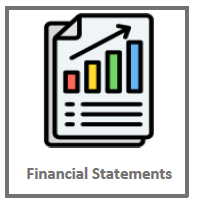
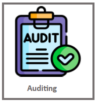
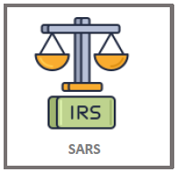
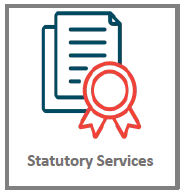
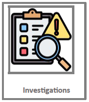

Home
Camira
Services
Contact Us
Articles
About Us
Our Services
Click an icon below to see details
    
Select a service
Click an icon above to see details.
Monthly Bookkeeping - R500
Preparation of Financial Statements - R3000
Auditing - R2000
Services pertaining to SARS - R1500
Tax Guidance - R2500
Statutory Services - R3500
Assistance with Liquidations - R4000
Forensic Investigations - R6000
Total: R
0